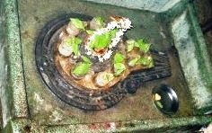

<?xml version="1.0" encoding="UTF-8"?><rss version="2.0"
	xmlns:content="http://purl.org/rss/1.0/modules/content/"
	xmlns:wfw="http://wellformedweb.org/CommentAPI/"
	xmlns:dc="http://purl.org/dc/elements/1.1/"
	xmlns:atom="http://www.w3.org/2005/Atom"
	xmlns:sy="http://purl.org/rss/1.0/modules/syndication/"
	xmlns:slash="http://purl.org/rss/1.0/modules/slash/"
	>

<channel>
	<title>Panch Krosha Temple &#8211; Varanasi Temples</title>
	<atom:link href="index.html" rel="self" type="application/rss+xml" />
	<link>../../../../../index.html</link>
	<description>Temples of Varanasi as referred to in Kashi Khand</description>
	<lastBuildDate>Thu, 19 Jun 2025 05:16:46 +0000</lastBuildDate>
	<language>en-US</language>
	<sy:updatePeriod>hourly</sy:updatePeriod>
	<sy:updateFrequency>1</sy:updateFrequency>
	<generator>https://wordpress.org/?v=4.6.29</generator>
	<item>
		<title>PANCH KROSHA TEMPLE</title>
		<link>../../../../../shiva-temples/panch-krosha-temple/index.html</link>
		<pubDate>Mon, 10 May 2010 15:13:41 +0000</pubDate>
		<dc:creator><![CDATA[admin]]></dc:creator>
				<category><![CDATA[Other Shiva Temples (L-R)]]></category>
		<category><![CDATA[Panch Krosha Temple]]></category>
		<category><![CDATA[Shiva Temples]]></category>
		<category><![CDATA[panch]]></category>
		<category><![CDATA[pancha]]></category>
		<category><![CDATA[pancha krosha]]></category>
		<category><![CDATA[pancha krosha yatra]]></category>

		<guid isPermaLink="false">../../../../../p=410.html</guid>
		<description><![CDATA[Kashi Khand has described the importance of the area included under Pancha Krosha Kshetra which is considered to be the most pious area.  In Chapter 26, this area is described to contain the Avimukta Kshetra, housing Visweshwar Temple.  Further, Lord Shiva has described the area coming under Pancha Krosha as very dear to him.  The [&#8230;]]]></description>
				<content:encoded><![CDATA[<p>Kashi Khand has described the importance of the area included under Pancha Krosha Kshetra which is considered to be the most pious area.  In Chapter 26, this area is described to contain the Avimukta Kshetra, housing Visweshwar Temple.  Further, Lord Shiva has described the area coming under Pancha Krosha as very dear to him.  The importance of this area has been amply described in various other Purans also.</p>
<p>Kashi Khand, in Chapter 100 has prescribed various Yatras (religious tours like Shiva Ling Yatras, Ekadasa (eleven) Ling Yatras, Antargrihi Yatra, Gauri Yatra, Surya Yatra, Bhairava Yatra, Vishnu Yatra etc.</p>
<p>One important Yatra being undertaken by the religious devotees in and around Kashi is the Pancha Krosha Yatra which takes a circumambulation around Kashi Kshetra. This tour involves about five days and devotees worship 128 deities on the way.  The tour is indeed tedious and to avoid hardship, people undertake this tour by car or other conveyance to finish the trip in one day.</p>
<p>Pancha Krosha Yatra, per se, has not been mentioned in Kashi Khand, though this finds mention in other Purans like Brahma Vaivart Puran (Kashi Rahasya), Koorma Puran etc.  However, local devotees hold Pancha Krosha Yatra in high esteem and it is reckoned with almost synonymous with Kashi Khand.  Therefore, the compiler is pleased to write about this.</p>
<p>There are various religious groups undertaking this Yatra. Experienced seniors sometimes lead the group of people or they depend on some people to take them around the various places.</p>
<p></p>
<p style="text-align: center;"><strong>(PANCHA KROSHA LING)</strong></p>
<p>For those who are not in a position to undertake the extensive tour (for reasons like physical strain, lack of time etc.), there is one Pancha Krosha Temple in Kashi where all the 128 deities are available in miniature form.  The Shiv Ling is supposed to be made of sphatik stone (crystal stone) with both Lord Shiva and Goddess Parvaty’s symbolic presence.  According to local pundits, worshipping this temple as per the schedule of Pancha Krosha Yatra is equivalent to undertaking the full fledged Yatra.</p>
<p><strong><span style="text-decoration: underline;">LOCATION OF PANCHA KROSHA TEMPLE</span></strong></p>
<p>Pancha Krosha Temple is located at Ck.5/32, Gola Gully, behind Kashmiri Mal Haveli.  Devotees can travel upto Chowk by rickshaw and travel to this place on  foot. Kashmiri Mal Haveli is a famous locality.</p>
<p><strong><span style="text-decoration: underline;">TYPE OF POOJA</span></strong></p>
<p>The temple is open from 06.00 a.m. to 11.00 p.m. and from 04.30 p.m. to 09.00 p.m.  The timings are flexbile.  Aarties are conducted in the morning and evening.</p>
<p>According to one of the Poojaries, this temple has been in existence for several centuries.</p>
<p>&nbsp;</p>
]]></content:encoded>
			</item>
	</channel>
</rss>
